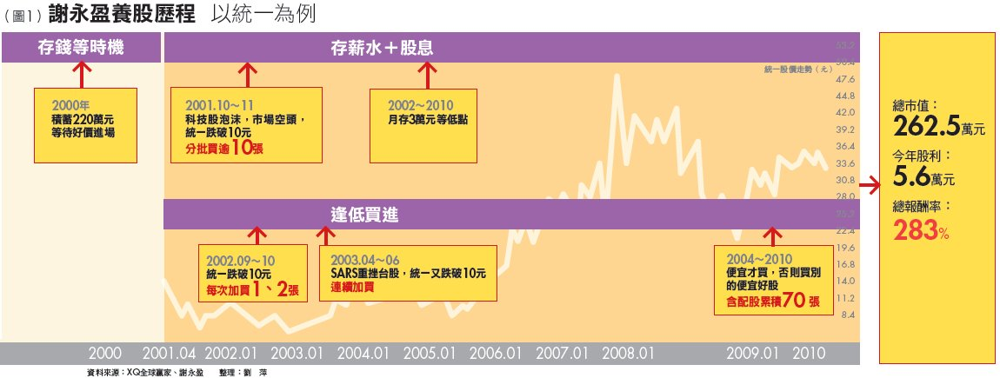
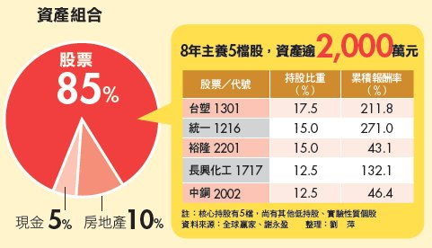

龍頭股低買不賣～堅持等到好價錢才進場
不蝕本》龍頭股低買不賣 教師身價2000萬 堅持等到好價錢才進場
▲謝永盈(化名)：「存股就像種果樹，時間到了就澆水，但千萬不能砍樹。」（攝影者．翁挺耀）
張錦輝單養1檔台化，輕鬆累積4,000萬元身價，還能每年坐領百萬元現金股利，讓我很羨慕。但是，他前後花16年時間，讓我覺得太久；而且股票太集中，也讓我怕怕。心中不免懷疑：難道沒有更快、更安全的做法嗎？
投入本金500萬元 1年股利收入高達近百萬
直到我遇見在高雄教書的謝永盈（化名），他教了我一套更快、更穩的養股致富法。今年55歲的謝永盈，再兩年就可退休，8年前，才開始學做股票；沒錯！從完全不懂股票到養股累積出千萬元身價，他只花了8年。
小檔案_謝永盈（化名） [ 隱藏 ] 出生：1955年 學歷：美國賓州州立大學哲學博士 經歷：建國中學教師 現職：高雄師範大學副教授
謝永盈合計投入的本金約500萬元，目前資產價值已達2,000萬元，等於變成為4倍，今年領到的現金股利則已將近100萬元。他是怎麼辦到的？怎麼會這麼快？
2000年以前，謝永盈自己沒碰過股票，但有將一些錢交給已經退休的爸爸拿去「炒」股。只是老人家忙進忙出多年，卻沒什麼賺賠，讓謝永盈直覺：一般人做股票只是在浪費時間，根本很難賺錢。直到看了一篇股神巴菲特（Warren Buffett）的報導，他對股票投資的印象大為改觀，也從此改變他的人生，「原來存到好股票，錢會不斷長大，生活也可以好好過。」
接著，謝永盈花1年時間，研讀巴菲特投資相關的書，甚至花錢去上「巴菲特班」，學習如何效法巴菲特投資股票。「看到最後，發現巴菲特投資原則最關鍵的只有兩個：一是先挑好公司，再來就是等好價錢。」他說。
在台股裡要挑好股，用巴菲特選股原則可以選出不少「好公司」，但謝永盈只挑他耳熟能詳的大公司做為養股標的，包括台塑（1301）、裕隆（2201）、中鋼（2002）、統一（1216）等共4檔。
Tips_巴菲特投資原則 [ 隱藏 ]
好公司：成熟產業的龍頭股，長期維持高獲利（股東權益報酬率＞15%）、穩定配息
好價錢：股價被低估時，通常本益比要低於12倍
操作：找到好公司就靜待好買點，然後長期持有，除非公司體質變壞，否則永遠不賣；透過每年配股配息，加
上股價上漲，累積財富
階段1》存錢等進場
預留生活費，餘錢逢低分批買
而接下來，才是投資股票能否賺錢的關鍵——要能等到好價錢。2001年年中，謝永盈盤點自己帳戶裡的錢，先預留一年半的生活費，剩下的積蓄還有約220萬元，全部轉到股票帳戶，準備進場。
結果，等了不到半年，全球股市因為網路泡沫崩盤，行情大跌，台股在18個月內，大跌超過6,900點，指數從萬點高峰直挫到3,411點才止跌反彈。許多好股票在這樣的跌勢中，連連重挫，本益比跌到10倍以下的股票比比皆是。那時候台塑、南亞聯袂跌破30元，裕隆跌破15元，統一更是一度跌到歷史低價區，只剩10元不到。
就在這時候，謝永盈第1次進場了！雖然不是買在最低點，卻是見到重挫就買進。「因為不知道股市會跌多久，所以就一次買1、2張，買完如果股價又跌，就再買；只要股價沒漲，就一直買。」謝永盈回憶。總共花了2～3個月的時間，手上可用資金全部買光，他主要看好的4檔股票，每檔都至少買進10張以上。
有20年股票投資經驗的富鴻理財顧問公司副總經理林成蔭認為，謝永盈這種「等」好股跌到低檔時才建立部位的做法，因為站在「買低」的基礎上，已經立於不敗之地。
光會買低還不夠，「養股」效益要加大，還得繼續養。為了準備下一波進場的資金，謝永盈開始每個月從薪水中撥出4成、近3萬元存到股票帳戶中，「先存進來，免得花掉，等到有好價錢時，才有錢可買。」
階段2》逢低再加碼
若銀彈不足，選獲利預估高的
這階段，謝永盈的子彈不像第1次進場時那麼多，無法像之前那樣，一次買進4檔股票，這時就得在核心持股中進行挑選。
謝永盈說，在股價低、股利殖利率高等條件都大致相當時，他會去找研究報告，看哪一家公司年度預估獲利比較高，就先買那檔股票。像2001年買進後，當統一又出現跌到10元左右的低價區，他都會進場1、2張的撿。
雖然可以買的公司很多，「但重點是有沒有好價錢，沒有就不買，錢先存著，耐心等便宜價，到時錢也多了，買的張數更多。」謝永盈自信地道出自己的心得。
堅持「等好價錢」的原則，讓謝永盈又等到一次好機會。那是2003年4月SARS（嚴重急性呼吸道症候群）肆虐台灣期間，他發現統一股價跌到9.5元，因為手邊又存了一些錢，就2、3張的買，一買又是10多張。
另外，在這一年，謝永盈的核心持股還多增加了1檔長興化工（1717），會選到這一檔股票，是他受邀到長興化工演講。演講完後，和長興員工聊天，發現這家公司的員工都對工作積極投入，加上公司獲利和配股都不錯，員工對公司前景很有信心。
回家後，謝永盈開始上網找資料，確認長興符合「好公司」的條件，加上當時股價跌到16元附近，創近1年新低，他開始一張一張敲進，同樣存了10多張。
與一般股民不同，平常都上網看股票資訊的謝永盈，在大盤重挫或是發生金融風暴時，他會特別去號子逛逛，只要看到平時熱鬧的交易廳冷冷清清，就馬上加買3、4張。「當電氣用品打折時，大家會搶著買；為什麼股票打折時，大家卻不敢買？我當然要趕著撿便宜！」謝永盈得意地說。
但是，好公司不會天天有好價錢讓你買，所以謝永盈常常1年買不到兩回，有時甚至一整年都沒得買，他就專心工作、繼續存錢，備好銀彈等時機。
以他操作的這8年經驗看，平均2～3年左右，就會有一次進場的好機會。「只要逢低買，累積財富的效果很快就會出現！」這樣的信念支持他耐心等下去。
階段3》用股利滾入
遭遇金融海嘯，也還是賺
謝永盈運用這套養股術，到2006年，光台塑1檔股票，含配股已累積超過50張，成為他的第1大持股。「從這一年開始，我每年領的股利就超過70萬元，所以，我不再投入薪水，光用股利再投入就夠買了！」他說。
不過，這套養股法在2008年遭遇嚴重考驗。那時謝永盈帳上資產一度已超過1,500多萬元，但11月金融海嘯發生，股票價值快速跌到剩780多萬元。短短3個月，資產價值縮水幾乎一半，「當時心裡很不舒服，開始懷疑這樣養股到底對不對？」
喜歡研究的謝永盈開始思考，他先計算自己從頭到尾投入的資金，發現大約是500萬元，以當時股價計，等於還有5成的獲利；而且股價在跌，但他的股利卻沒少領。
除了計算自己的投資成績單，他也比較一些朋友的「慘況」。當年聽到他要用200萬元長期養股時，有位朋友也拿同樣金額買股，但做的是短線價差交易。這朋友一次買進就是數十張，剛開始，1週可以賺30、40萬元，1年累積成交金額上億元，但幾年下來，本金卻虧到只剩下10多萬元。 兩相比較後，加上那一年謝永盈領到近100萬元的股利，對自己養股術的懷疑頓時消失，於是把當年領到的現金股利，馬上再投入逢低買進。
初期效果不明顯
撐過3年，財富就會快速增加
「這樣投資像是坐摩天輪，不刺激卻很穩；相反的，賺價差像坐雲霄飛車，很刺激，但對心臟不好！」謝永盈如此分析。
2009年7月，景氣確定復甦，很多人還不敢進場，那時晉昂投顧總經理洪瑞泰經營的「巴菲特班部落格」上，某一天出現一段留言：「8年下來，我一共投入500萬元在好公司上，幾乎只買不賣。2年前就沒再轉錢到股票帳戶，配的股息已經夠買股票了。目前資產在1,500萬??每年這時候開始領股利，已經接近個人年所得，日子很好過的，不是嗎？何必要把投資弄得那麼複雜！」
這一段留言，不但激勵巴菲特班成員，也引起我的注意，讓我找到謝永盈，並領教這套簡單易做的養股術。
問他這8年養股的心得是什麼？他的回答很直接：「理財的目的是什麼？如果不工作，你的錢能花多久？養股票，這兩個問題可以一次都解決！」
今年7月，又到了謝永盈領「年中獎金」的時候，他結算，帳上股票資產價值已超過2,000萬元，領到的股利還是近百萬元。謝永盈建議，年輕人用這套方法，剛開始效果可能不明顯，很容易放棄，但至少要撐過3年，財富就會明顯增加，到時候「你就會愛上這方法，並且持續下去」。

謝永盈養股歷程 以統一為例
【專家分析】大眾證券副總經理 黃嘉斌：
堅守4原則賺股利又賺價差
謝永盈選的都是產業龍頭股，加上堅持低檔買進，大幅降低了持股成本，相對使得所領的股息殖利率能夠提高，長期投資下來，報酬率會比定期定額買股要好。再者，因為持股成本夠低，當他要退場時，還有機會賺到價差。我很認同這樣的做法。但是，提醒投資人，若要仿效他的做法，以下4點必須要堅持：
1. 必選龍頭股
這是第一前提，尤其是像中鋼、台塑這種景氣循環股，遇到景氣往下時，公司獲利會減少；若不是產業龍頭公司，可能就會虧錢。所以，記得！選龍頭股才安全！
2. 買進價要低
萬一買價過高，退場時，你的本金就很容易虧損。所以切入點很重要，就算不可能買在歷史低點，但也要堅持每次出手都買在本益比和股價淨值比低時。
3. 看月線操作
景氣循環股每次在買進時，可用月線判斷循環價位的區間，通常大概1年走多、接下來1年就會走空。例如去年上半年走空要買，今年就不要碰，先存錢，等明、後年跌到循環低檔時再進場買進。記得！每1～2年會有個相對好買點出現，這樣操作，報酬率會提高很多。
4. 適度分散
原則上，存3～5檔股票就具有風險分散的效果了，雖然與集中買1檔來比，分散布局的報酬率可能會拉低，但用時間累積，最後報酬不見得差。不過，資金少的投資人，建議先集中存1檔股票累積股數，不適合太分散。
延伸閱讀：存股心得
- 存股等於自己替自己多加一份薪水
- 長抱股，別管股價，只有股利才是真的
- 個股配現金最好，股本不會太過膨脹，公司不會被掏空
- 選好公司、等好價錢，價錢到了就一直買
- 存股就像種果樹，時間到了就澆水，但千萬不能砍樹
